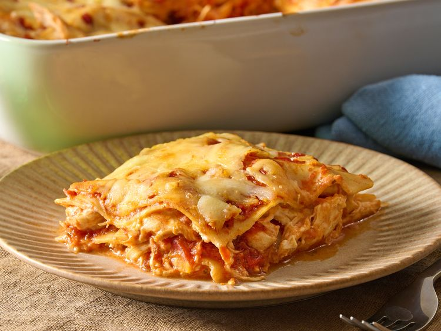

Lasagna is a classic Italian dish made with layers of pasta, cheese, and sauce. This recipe features a creamy chicken filling and rich tomato sauce for a comforting meal.
This easy lasagna features jarred spaghetti sauce for easy layering and rich tomato flavor.